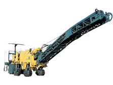
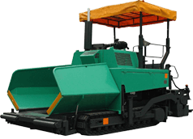
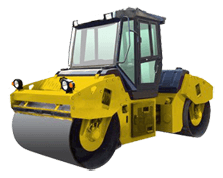
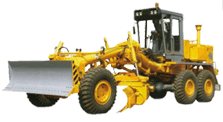
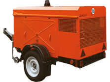

Доставка
| Аренда дорожной фрезы | Аренда асфальтоукладчика |
|  |  |
| Аренда экскаватора-погрузчика | Аренда катка дорожного |
|  | |
| Аренда самосвалов | Аренда автогрейдера |
|  | |
| Аренда автогудронатора | Аренда низкорамных тралов |

|
|
| Аренда автокомпрессоров и компрессоров | |
|  | |
Аренда дорожно-строительной техники в Москве.
Зачем Вам тратить деньги на покупку специализированной техники? Когда Вы можете у нас взять в аренду практически любой вид спецтехники. Мы предлагаем следующую спецтехнику в аренду:
- Аренда асфальтоукладчика;
- Аренда дорожной фрезы;
- Аренда дорожного катка;
- Аренда фронтального погрузчика;
- Аренда экскаватора-погрузчика;
- Аренда самосвалов;
- Аренда автогрейдера;
- Аренда автогудронатора;
- Аренда экскаваторов;
- Аренда низкорамных тралов;
- Аренда автокомпрессоров и компрессоров;
Компания «АСФАЛЬТ-СТРОЙ» предоставляется аренда техники на любой срок. Что включает в себя «аренда техники» в нашей компании это:
- Доставку непосредственно на объект по Москве и Московской области
- Вся техника сопровождается квалифицированными специалистами.